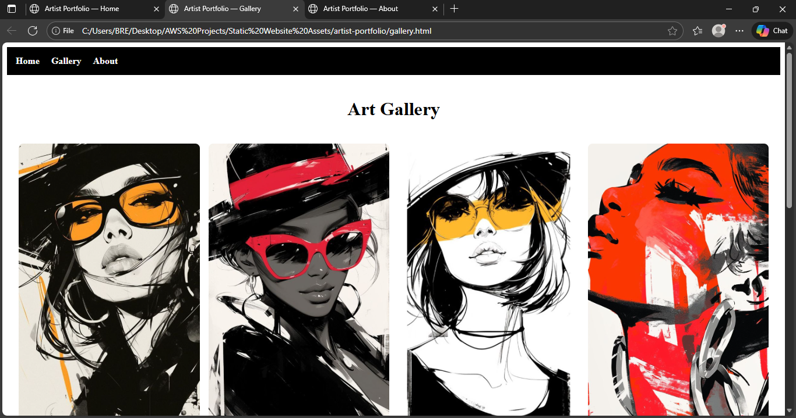

E-Commerce Traffic Spikes (AWS Autoscaling Project)
Overview: A scalable, high-availability AWS architecture designed to handle real-world e-commerce traffic spikes.
When online stores experience sudden traffic surges during sales and product launches, websites crash or slow down. I built a fully elastic AWS architecture using a custom VPC, EC2 Auto Scaling, an Application Load Balancer, and RDS to show how e-commerce platforms can stay fast and reliable even under unpredictable load.
Architecture Diagram

Tools Used
- AWS VPC | EC2 | AutoScaling | Load Balancer | RDS | CloudWatch | IAM | Route53
Story
My Ecommerce Spikes project is a simple backend service I built to understand how ecommerce systems work under the hood: storing orders, retrieving product data, and handling requests like a real API.
- I designed and built the backend using:
- AWS Lambda for running the logic
- API Gateway for the routes
- DynamoDB for storing the data
This project helped me understand how real ecommerce apps scale without servers, how to handle data efficiently, and how modern cloud-native apps are structured.
Challenges I faced
- Finding the right architecture as a beginner
- Understanding IAM permissions
- Breaking the project into small steps
- Handling errors and learning to debug
At first, I wasn’t sure how to structure a cloud-based ecommerce spike. I had to test multiple options, read documentation, and simplify the design so it made sense to me.
This project taught me how sensitive AWS permissions are. A single missing permission caused failures, so I learned to read logs, test policies, and troubleshoot calmly.
Ecommerce feels huge, but I learned that if I break a project into tiny pieces — static content, a backend flow, data storage — everything becomes achievable.
Misconfigured permissions and routing issues forced me to slow down and analyze errors rather than panic. This improved my problem-solving mindset.
Outcome
This project demonstrates cloud architecture skills—scalability, fault tolerance, and cost-efficient resource management—mirroring the same patterns used in production e-commerce environments.
Static Art Portfolio Website (S3 Hosting Project)
Overview: A fully static art portfolio website hosted on Amazon S3.
I designed and deployed a simple static website to showcase art and graphic design work. The site loads instantly, works across all devices, and uses AWS S3 static hosting for low-cost, high-durability storage.
Architecture Diagram
Services Used
- AWS S3 | HTML | CSS | GitHub
Steps
- Created and configured S3 bucket for static hosting
- Uploaded HTML/CSS files
- Set correct bucket policy + CORS rules
- Enabled versioning and logging
- Linked custom domain using Route 53
Challenges
- Fixing broken links and image paths
- Understanding how versioning and re-uploads work
- Deploying with S3 when things didn’t load
My images didn’t show at first, so I learned how relative paths work and how folder structure affects a website.
Every change required me to re-upload files. This taught me to manage versions carefully and test each update.
At first, my pages weren’t displaying correctly. I had to understand bucket hosting, public access settings, index documents, and MIME types.
Outcome
This project strengthened my static hosting and frontend fundamentals, proving I can deploy lightweight websites on AWS with proper structure, design, and accessibility.
Customer Feedback API (Serverless Lambda + API Gateway + DynamoDB)
Overview: A serverless API that collects customer feedback and stores it securely in DynamoDB.
Many small businesses lack a lightweight backend system for collecting feedback without running servers. I built a fully serverless API that receives user input, validates it, and stores it in a DynamoDB table for analysis.
Architecture Diagram

Services Used
- AWS API Gateway | Lambda(Python) | DynamoDB | IAM | CloudWatch | JSON
Story
Every great product needs feedback — and this project taught me how to collect it the cloud-native way. I built a serverless Customer Feedback API that lets users send feedback, which is then stored in DynamoDB. This was my chance to learn how real companies build backends that:
- Accept incoming requests
- Validate data
- Write to a database
- Scale automatically
- Stay cost-efficient
- AWS Lambda for the compute
- API Gateway for the endpoint
- DynamoDB for storage
- IAM for secure access
- DynamoDB permissions and IAM troubleshooting
- Testing with both synchronous and asynchronous invocations
I used:
Challenges
This was my biggest challenge. My Lambda function ran successfully but didn’t write to the table. I had to troubleshoot IAM roles, policies, and execution logs.
Synchronous tests failed at first. This forced me to think like a developer and debug step-by-step instead of guessing.
Outcome
This project demonstrates modern backend development—serverless, event-driven, scalable, and cost-efficient. No servers, no maintenance, and instantly ready for integration with any frontend.
AWS Restart Question Bank (S3 Website + JavaScript App)
Overview: A lightweight practice tool that helps AWS Restart learners study foundational AWS concepts using simple explanations and analogies.
Many AWS Restart trainees in Uganda lack free, accessible study tools for AWS Restart. I created a static practice site powered by JSON, JavaScript, and S3 hosting to make revision easier.
Architecture Diagram

Structure
- AWS S3 | IAM | HTML | CSS | JavaScript | JSON | Git | GitHub
Story
When I was studying cloud, I noticed one thing:
Most beginners struggle not because AWS is hard, but because the explanations online are too complicated.
So I created something I wish I had when I started — a simple website with AWS foundational questions explained in plain language, with analogies.
I built it for learners in Uganda who may not have access to pricey resources — something lightweight, accessible on any device, and free.
Challenges
Organizing large sets of questions and designing a clean structure for easy navigation.
I had to figure out how to load questions, show answers, and format JSON — all with simple JS.
Outcome
Well-structured revision resource for AWS Restart learners.
It can be expanded with search, categories, scoring, and eventually DynamoDB.